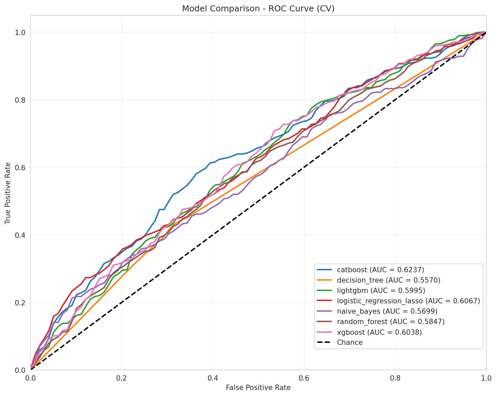
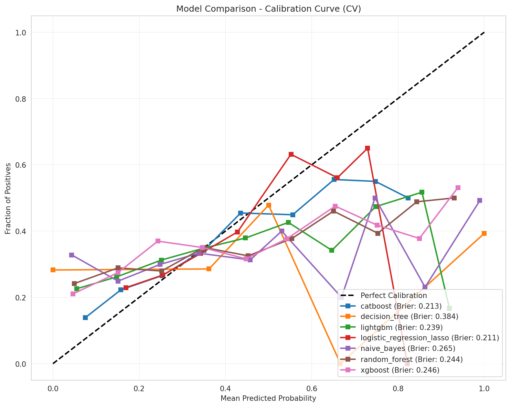
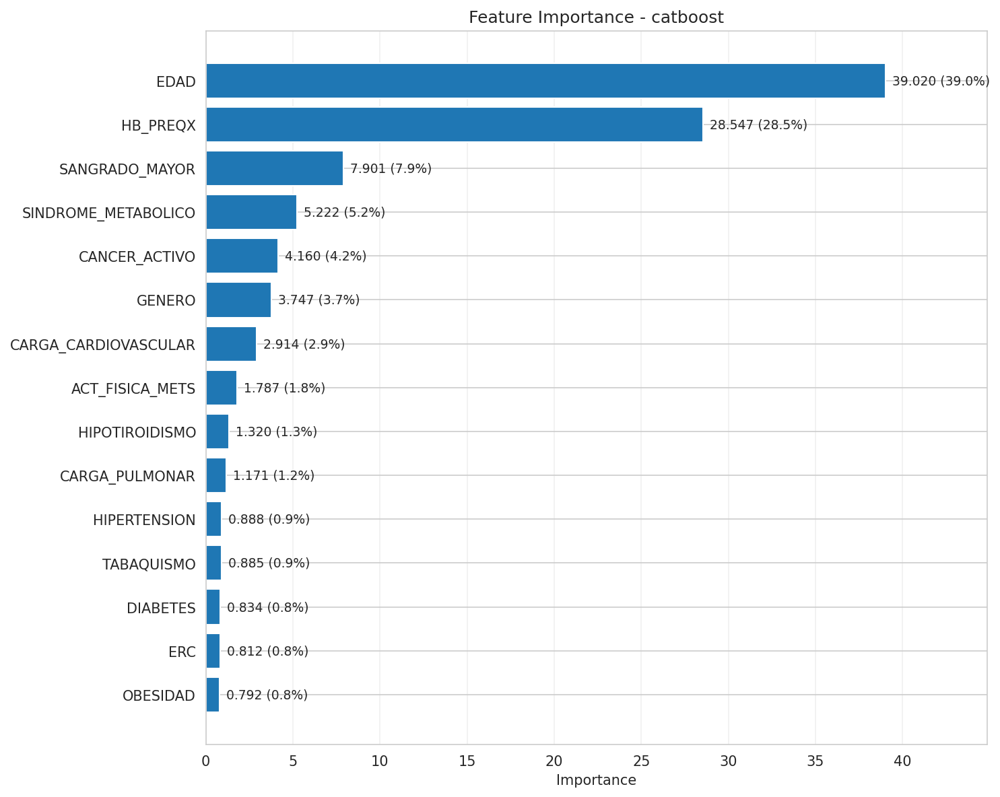

Fase · Fase 4
EXPERIMENTO 4 - FEATURE PRUNING
Objetivo: eliminar features de baja importancia (threshold=0.01) para simplificar modelos
| Modelo | AUC ROC | Brier Score | Δ vs Exp2 | Posicion |
|---|---|---|---|---|
| catboost | 0.6237 | 0.2126 | +0.0045 | 1 |
| logistic_regression_lasso | 0.6067 | 0.2111 | +0.0012 | 2 |
| xgboost | 0.6038 | 0.2462 | -0.0007 | 3 |
| lightgbm | 0.5995 | 0.2388 | 0.0000 | 4 |
| random_forest | 0.5803 | 0.2438 | -0.0065 | 5 |
| naive_bayes | 0.5699 | 0.2649 | +0.0042 | 6 |
| decision_tree | 0.5534 | 0.3795 | -0.0034 | 7 |
ROC comparativa (Exp 4)

Calibracion comparativa (Exp 4)

Feature importance - catboost

SHAP Summary - catboost

Lectura
CatBoost alcanza mejor score hasta ahora: 0.6237 (+0.45% vs Exp2). Pruning elimino features ruidosas sin perder señal. Top features: EDAD (39.02%), HB_PREQX (28.55%), SANGRADO_MAYOR (7.90%). Features agregadas mantienen aporte: SINDROME_METABOLICO (5.22%), CARGA_CARDIOVASCULAR (2.91%). Simplificacion mejora generalizacion.
Graficas actualizadas desde exp_04_feature_pruning - modelo catboost - plot_metadata.json
4